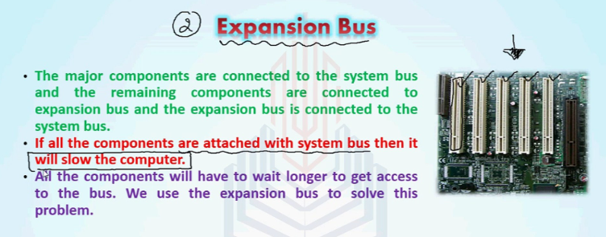
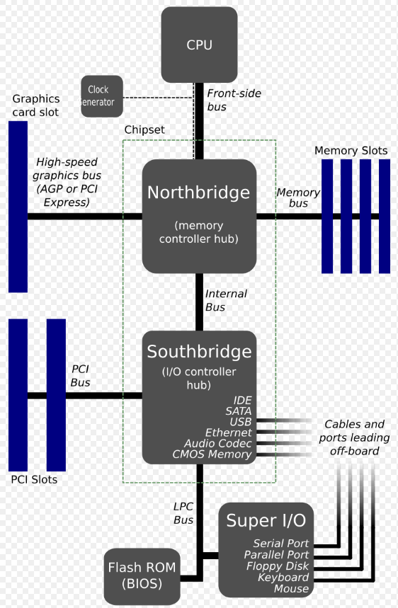

Computer hardware refers to the physical components of a computer system that can be seen and touched, such as the central processing unit (CPU), random access memory (RAM), hard disk drive (HDD), keyboard, mouse, and monitor. These components work together to enable a computer to perform various tasks.
Some Important Hardware
Power Supply Unit (PSU): Every component needs electricity at the right voltage. The power supply unit takes AC (alternating current) power from the wall outlet and converts it into the DC (direct current) power the components use, at standard voltages such as 12V, 5V and 3.3V. The motherboard then passes power on to the components plugged into it.
Network Interface Card(NIC): Today, most computers need to connect to the internet. That's the job of the Network Interface Card, or NIC. Some motherboards have a NIC built in, while others need one to be added on. Some NIC's are for wired, some wireless, and some for both.
Graphics Processing Unit(GPU): The CPU is the main processor in a computer, but computers require additional processing power for creating images and graphics. This is supplied by the Graphical Processing Unit, or GPU. Most Computers today handle graphics processing through the CPU and RAM, this is called integrated graphics (or onboard graphics). But computers that are used for gaming, video editing, 3D modeling and animation will need a GPU that's dedicated to graphics processing. The best graphics card will be expensive because they also contain their own specialized ram, processors and cooling systems.
Cooling Systems: High-speed computing produces a lot of heat; a busy CPU can reach around 90–100°C, and that much heat can damage components or make the system slow itself down (thermal throttling). A typical desktop is cooled with a heatsink, thermal paste and fans; higher-end systems may use liquid cooling.
Internal Computing Components
CPU: The most important part of any modern computer system is the central processing unit, or CPU. Just like the brain controls the body, the CPU controls the other parts of the computer by getting information from them, then telling them what to do. After receiving raw input data from the user, the CPU applies the data to a list of instructions, called a computer program. Then the CPU executes each line of the computer program in order, turning the data from the user into information. This is called processing.
RAM: The CPU is great at performing calculations, but it can only deal with one line of code at a time - it can't keep track of the whole program at once. Instead, the computer stores this info in RAM, or Random-Access Memory. When you run a program, the computer loads the instructions in RAM. Then, the CPU takes the first line of instructions from RAM, executes it, and writes the results back to RAM to use later. RAM is extremely fast, but it's also volatile. If you turn off the computer, RAM will forget everything it was holding. For this reason, RAM is sometimes called "short term memory" - it's only concerned with whatever the computer is using right now.
Motherboard: The CPU and RAM are connected by a large flat component called the motherboard. The Motherboard is like the spine in your body, it connects all the other parts to each other and sends electrical signals between them. An important part of the motherboard is a chip that contains the BIOS, or Basic Input Output System (or UEFI, Unified Extensible Firmware Interface). When you start a computer, the BIOS makes sure all necessary parts are plugged in and working properly, then it tells the Operating System to load.
Find it on the motherboard
Click each part to learn what it does. When you know them, switch to Quiz me and find each one without the labels. (Simplified drawing; real boards vary in layout.)
What does the power supply unit (PSU) do?
The PSU turns the wall's AC into the DC voltages (12V, 5V, 3.3V) the parts use. Keeping power during an outage is a UPS's job, and keeping the BIOS settings and clock is the CMOS battery's job.
Buses
In addition to the internal computing components listed above, computer systems also use buses to transfer data between components. A bus is a communication system that connects various components of a computer and facilitates the transfer of data between them.

There are a variety of different types of buses used in computer systems, each with different characteristics and uses. Some of the most common types of buses include:
System bus: Connects the CPU to main memory (RAM) and the motherboard's chipset. Older computers used a "front-side bus" for this; modern CPUs have the memory controller built in and talk to RAM directly.
Expansion bus: Lets you add components such as a video card or network card. On modern computers this is PCI Express (PCIe). Older buses, PCI and AGP, are now legacy.
Backplane bus: Used in larger systems, such as servers and storage enclosures, to connect many cards or drives over a shared high-speed board.
Internal bus: Connects the parts inside a single component, such as the cores and cache inside a CPU.
Buses are an important part of computer systems, as they enable different components to communicate with one another and work together to perform various tasks.
Computer Buses
In computers, the bus is responsible for transferring the following:
Power: Expansion slots also deliver power to the cards plugged into them (for example, a PCIe x16 slot supplies up to 75 watts; bigger graphics cards need extra power cables from the PSU).
Data: The data is the information that is transferred between the components in the computer.
Memory Location: Memory temporarily stores the data while it's needed for processing. The bus keeps track of the address or location where the data is stored in the memory.
Clock Timing: A clock signal, generated on the motherboard, keeps the components in step with each other as they send data over the bus.

Throughout the years, the architecture of the expansion bus has changed. Since the architecture of the bus is dependent on the motherboard and CPU, it’s important to know the types of bus systems that have been and are being used:
PCI
The PCI (Peripheral Component Interconnect) bus is a standard hardware interface used in computers to connect peripheral devices—like network cards, sound cards, or graphics cards—to the CPU and memory. It acts as a shared communication pathway, allowing devices to send and receive data efficiently
PCIe
PCI Express, or PCIe, is a next-generation I/O bus architecture. Rather than a shared bus, each PCIe slot links to a switch which prioritizes and routes data through a point-to-point dedicated connection and provides a serial full-duplex method of transmission. PCIe is backwards compatible and allows legacy PCI technology to run in the same system. PCIe buses are most commonly used for video cards in modern computer systems, although nearly any device can be designed for a PCIe slot.
A PCIe slot is made of lanes: x1, x4, x8 or x16 (graphics cards use x16). More lanes means more bandwidth. Each new version of PCIe roughly doubles the speed of every lane:
Version 1.0: about 250 MB/s per lane
Version 2.0: about 500 MB/s per lane
Version 3.0: about 1 GB/s per lane
Version 4.0: about 2 GB/s per lane
Version 5.0: about 4 GB/s per lane (current desktops and fast NVMe SSDs)
Version 6.0: about 8 GB/s per lane (newest servers)
So a PCIe 4.0 x16 graphics card slot moves about 32 GB/s. Cards and slots of different versions work together, at the speed of the slower one.
A PCIe 4.0 graphics card is installed in a PCIe 3.0 x16 slot. What happens?
PCIe versions are backward and forward compatible. The card and slot agree on the fastest version both support, here PCIe 3.0 (about 1 GB/s per lane, about 16 GB/s across x16).
AGP (legacy)
AGP (Accelerated Graphics Port) was a slot made just for graphics cards in the late 1990s and 2000s. It has been completely replaced by PCIe; you will only see it in very old computers.
Computer Hardware Types
All of these different components can be categorized into four main types of computer hardware: (Note: these are also the four functions that represent how data moves through your system, just in a slightly different order.)
Input devices: These are used to input data and commands into a computer system. Examples include keyboards, mice, scanners, and cameras.
Output devices: These are used to display or output data from a computer system. Examples include monitors, printers, and speakers.
Processing devices: These are used to process data and perform calculations. The CPU and GPU are examples of processing devices. (RAM is not a processing device: it is memory that holds what the CPU is working on right now.)
Storage devices: These are used to store data and programs. Examples include hard disk drives, solid-state drives, and USB flash drives.
Peripherals vs. input/output devices: a peripheral is any device you connect to a computer from outside to add a function, such as a keyboard, mouse, monitor, printer, scanner, webcam or external drive. Most peripherals are input devices (keyboard, mouse, scanner, webcam), output devices (monitor, printer, speakers) or both (a touchscreen). Some are storage instead, like an external hard drive. "Input/output" describes what a device does; "peripheral" describes that it is attached from outside.
Power-On Self Test
The POST (Power-On Self-Test) is a diagnostic testing sequence that a computer performs when first powered on.
When you press the power button, before loading any operating system, your computer's BIOS/UEFI firmware initiates POST to check that essential system components are present and functioning correctly. The sequence typically includes:
Checking the CPU and clock
The CPU performs a simple self-test and checks its registers.
The system clock is checked to make sure it runs at the correct frequency.
Checking system memory (RAM)
POST runs a quick check that the memory is present and responds. (A full memory test is a separate, slower tool, such as Windows Memory Diagnostic.)
Initializing core motherboard components
The chipset and bus controllers are initialized.
Basic voltage and power readings are verified.
Detecting and initializing storage devices
POST identifies the storage devices (HDDs, SSDs, optical drives).
The BIOS/UEFI queries each device through the storage controllers.
The boot device order is taken from the firmware settings.
Testing basic input/output (keyboard, display)
The keyboard controller is initialized.
Video memory is tested and basic display output is verified.
USB controllers are initialized.
If POST encounters any critical errors, it usually communicates through a series of beep codes or error messages since the display may not be initialized yet. For example, a series of long beeps might indicate a RAM failure.
Once POST completes successfully, the system proceeds to boot the operating system. If POST fails, the computer won't boot at all - this helps prevent damage and alerts users to hardware problems.
A computer powers on, the fans spin, the screen stays black and it gives a series of beeps. What is the most likely meaning?
POST runs before the operating system loads, and because the display may not be working yet it reports faults with beep codes. Look up the pattern in the motherboard manual; reseating or replacing RAM is a common fix.
Computer Types
Desktops: Often referred to as workstations or PCs, desktops are computer systems small enough to fit on, under, or near a desk. They are widely used for business, industry, and home use. Desktop systems are equipped with peripheral devices such as a monitor, keyboard, mouse, and speakers. They have several advantages including modularity, ease of repair and upgrade, the power to run CPU-intensive tasks, and storage capacity to handle larger amounts of data than other devices. However, they are not mobile and require continuous access to an A/C power outlet.
All-in-one devices: These types of desktop computers contain every component except the keyboard and mouse in the same case as the monitor. They require less space than a desktop and are easy to move to a new location. However, they are harder and more expensive to repair, and in most cases, you are not able to expand the memory or disk space.
Notebooks and laptops: These computers have all components built into one case. They can run the same productivity applications as desktop systems, are smaller, weigh less, use less power than desktop systems, and include batteries that allow them to run without external power for a period of time. They are mobile and often include built-in wireless networking. However, they are more difficult to upgrade or repair, usually more expensive than comparable desktop systems, and typically have less computing power than comparable desktops.
Hybrid laptop devices (2-in-1): These computers cater to the needs of both tablet and laptop users. They provide a touchscreen and other tablet-style conveniences but also provide an operating system and keyboard.
Gaming consoles: These are computer systems specifically built to be operated by a gaming pad instead of a keyboard and mouse. They include major computer components, such as CPU, GPU, RAM, an operating system, disk storage, etc. These components are designed to work best with games and the high graphics capabilities required by these games.
Network Client: This is a device that can connect to a network. All the above devices can be network clients.
Mobile Devices: These are small computing devices, such as tablets and smartphones. They are much more mobile than any other type of computing device and include a variety of integrated devices, such as cameras, microphones, and wireless networking. However, they are difficult to repair and nearly impossible to upgrade.
Servers: These are computers whose purpose is to provide shared disk storage or to perform a special service for a large number of people, such as web processing, email, or database services. Servers are widely used in business and typically have more memory, disk space, and processing power than a desktop computer.
Try it on your computer (Windows, 3 minutes)
Press Ctrl+Shift+Esc to open Task Manager and select Performance.
Click CPU: note the processor model, its speed, and how many cores and logical processors it has.
Click Memory: note how much RAM is installed, its speed, and how many slots are used ("Slots used: 2 of 4").
Press Windows+R, type msinfo32 and press Enter. Find the BIOS Version/Date, BIOS Mode (UEFI or Legacy) and the BaseBoard (motherboard) maker.
Only look; don't change any settings. On a Mac, choose Apple menu > About This Mac > More Info to see the chip and memory.
Next: CompTIA A+, Lesson 2
Open CertMaster Learn in a new tab and complete Lesson 2, including its practice questions. Then come back here and continue.